How to use this lesson
§0 · From last time. Module 3 covered LLM-internals generically (attention, tool use, constrained decoding). Module 4 used the Anthropic SDK to build Sherpa. This lesson opens the SDK's hood — what's actually in a Messages API call, how streaming works, how tool use blocks compose, what errors mean, and how to count tokens before sending.
Business Scenario
HSBC pre-launch review, Friday afternoon.
Daniel Cho is reviewing Sherpa v5 with the Anthropic field engineer assigned to the bank's account. Two issues:
- Streaming with tool use — Aisha's UI shows the agent's classification appearing all at once after a 6-second wait, instead of streaming. The engineer says "you can stream tool-use responses, but you have to handle
content_block_*events correctly." - Mysterious 529 errors — at 2 AM during the nightly batch, ~0.3% of calls return HTTP 529. Sherpa's retry middleware retries them blindly and they succeed. Daniel asks: "what is 529, and is blind retry the right answer?"
Both questions reveal that the team has been using the SDK at surface level — messages.create({...}).then(r => r.content) — without understanding the underlying protocol.
Bridge to Topic
To pass the architect exam (or to debug production), you need to know the SDK at the level where you can read a Messages API call and predict its cost, latency, failure modes, and feature usage at a glance. Streaming, content blocks, tool use, and error types are the load-bearing pieces.
Mind Map

Mermaid source
mindmap
root((Messages API))
Content Blocks
text
tool_use
tool_result
thinking
image
document
Streaming
message_start
content_block_start
content_block_delta
content_block_stop
message_delta
message_stop
Tool Use
tool_choice auto/any/specific
parallel_tool_use
tool_result blocks
cache_control on tools
Errors
400 invalid_request
401 auth
429 rate_limit
500 internal
529 overloaded
timeout / network
Token Counting
messages.count_tokens
cache hits don't count as input
pre-flight budgets
Elaboration
4.1 Content blocks — the atomic unit of a message
Every Messages API response (and tool-result input) is composed of typed content blocks. Six matter for an architect:
type ContentBlock =
| { type: "text"; text: string }
| { type: "thinking"; thinking: string; signature: string }
| { type: "tool_use"; id: string; name: string; input: Record<string, unknown> }
| { type: "tool_result"; tool_use_id: string; content: string | ContentBlock[]; is_error?: boolean }
| { type: "image"; source: { type: "base64" | "url"; media_type: string; data?: string; url?: string } }
| { type: "document"; source: { type: "base64" | "url"; media_type: "application/pdf"; data?: string; url?: string }; title?: string; citations?: { enabled: boolean } };
Key facts an architect must know:
- A single assistant turn can contain multiple blocks (e.g., text + thinking + multiple
tool_useblocks in parallel). tool_resultblocks go in the user role, not the assistant role.thinkingblocks must be passed back verbatim (with theirsignature) when continuing a conversation that used extended thinking.documentwithcitations.enabled = trueis how you get the Citations API — Lesson 14.4.
4.2 Streaming — the event protocol
When stream: true, the SDK returns an async iterator emitting Server-Sent Events. The event sequence:
message_start { message: { id, model, role, ... } }
content_block_start { index: 0, content_block: { type: "text", text: "" } }
content_block_delta { index: 0, delta: { type: "text_delta", text: "Hello" } }
content_block_delta { index: 0, delta: { type: "text_delta", text: " world" } }
content_block_stop { index: 0 }
content_block_start { index: 1, content_block: { type: "tool_use", id: "...", name: "..." } }
content_block_delta { index: 1, delta: { type: "input_json_delta", partial_json: "{\"q\":" } }
content_block_delta { index: 1, delta: { type: "input_json_delta", partial_json: " \"BRCA2\"}" } }
content_block_stop { index: 1 }
message_delta { delta: { stop_reason: "tool_use" }, usage: { output_tokens: 42 } }
message_stop
Two implications for Sherpa's UI bug:
- You must accumulate
input_json_deltachunks into a string andJSON.parseonly aftercontent_block_stop. Mid-stream JSON is not valid. - Show the user partial text as it streams — that's the whole point. The bug was the UI waited for
message_stopbefore rendering anything.
4.3 Tool use specification
Three control knobs for tool use:
{
tools: [...],
tool_choice: { type: "auto" } // model decides whether to use a tool (default)
| { type: "any" } // model MUST use SOME tool
| { type: "tool", name: "search_pubmed" } // must use THIS tool
| { type: "none" }, // disable tool use for this turn
// Parallel tool use (enabled by default)
// The model can emit multiple tool_use blocks in one turn; you execute
// them all and return ALL tool_result blocks in a single user message.
}
Three failure modes the architect must know:
tool_usewith truncated input — ifmax_tokensis hit mid-tool-call, the JSON is incomplete and unparseable. Increasemax_tokensor instruct shorter args.- Mismatched
tool_use_id— everytool_use_idmust be answered by exactly onetool_resultwith the same id. Missing one causes 400. is_error: truepropagation — set this ontool_resultfor failures; the model treats it differently than success.
4.4 Error taxonomy
400 invalid_request_error — bad params, schema violations, mismatched tool_use_ids
401 authentication_error — bad/missing API key
403 permission_error — beta feature without access, etc.
404 not_found_error — bad model name
413 request_too_large — request exceeds size limit
429 rate_limit_error — your tier's RPM/ITPM/OTPM exceeded
500 internal_server_error — Anthropic's problem
529 overloaded_error — Anthropic is overloaded; retry with backoff
The 529 from Sherpa is transient overload. Blind retry with backoff is the right answer — it's not a bug in your code. But you should:
- Retry with exponential backoff + jitter (1s, 2s, 4s, 8s — already in Sherpa's middleware after Module 9 hardening).
- Surface the retry count in observability so you can spot patterns (e.g., 529s spike at 2 AM UTC = global batch hour pressure).
- Don't retry forever — cap at 4 attempts. If all fail, surface to the agent as a failure observation.
4.5 Token counting before send
const count = await client.messages.countTokens({
model: "claude-sonnet-4-6",
system: SYSTEM_PROMPT,
messages: [{ role: "user", content: userInput }],
tools: toolSchemas,
});
// → { input_tokens: 4327 }
Use this when:
- You need to ensure you stay under a per-call cost budget
- You want to dynamically choose model tier based on input size
- You're batching messages and need to plan token spend per batch
Cache hits do NOT count toward input_tokens returned here — you'll see the full theoretical count. Actual billed input depends on cache state at request time.
Problem Statement
Daniel asks you three questions. Answer each with specific reference to the Messages API:
- "Why is Sherpa's streaming UI broken? What event sequence should the UI consume?"
- "What is HTTP 529? Should Sherpa's retry middleware treat it differently from 500?"
- "Show me how to count tokens before sending so we can route to Haiku when input is small, Sonnet when it's big."
Solution Walkthrough
1. Streaming UI fix
const stream = await client.messages.stream({
model: "claude-sonnet-4-6",
max_tokens: 4096,
system: SYSTEM_PROMPT,
messages,
tools,
});
for await (const event of stream) {
switch (event.type) {
case "content_block_start":
if (event.content_block.type === "text") {
ui.appendText(""); // start new text block
} else if (event.content_block.type === "tool_use") {
ui.startToolCall(event.content_block.id, event.content_block.name);
}
break;
case "content_block_delta":
if (event.delta.type === "text_delta") {
ui.appendText(event.delta.text); // STREAM CHUNK BY CHUNK
} else if (event.delta.type === "input_json_delta") {
ui.appendToolJSON(event.index, event.delta.partial_json);
}
break;
case "content_block_stop":
// Optional: render completed block in final form
break;
case "message_delta":
if (event.delta.stop_reason) ui.markFinished(event.delta.stop_reason);
break;
}
}
Aisha's UI now shows text appearing character-by-character. Tool-use JSON streams as it generates (you can show "searching..." in a spinner until content_block_stop).
2. 529 handling
function isTransient(err: AnthropicError): boolean {
return (
err.status === 429 || // rate limit — backoff respects retry-after if present
err.status === 500 || // internal — usually fast retry succeeds
err.status === 529 || // overloaded — needs longer backoff
err.status >= 502 && err.status <= 504 // gateway errors
);
}
const RETRYABLE_BACKOFF: Record<number, number> = {
429: 5000, // start at 5s for rate limits (respect retry-after if present)
500: 1000,
529: 3000, // give overloaded service room to recover
};
529 is meaningfully different from 500: 500 = problem with your specific request, 529 = Anthropic is shedding load globally. The right backoff is longer and you should cap retries lower than for 500. Surface the count in your metrics — a 529 spike across multiple agents indicates an Anthropic-side incident worth your team knowing about.
3. Token-counted routing
async function chooseModel(system: string, messages: Message[], tools: Tool[]) {
const { input_tokens } = await client.messages.countTokens({
model: "claude-haiku-4-5-20251001",
system,
messages,
tools,
});
if (input_tokens < 4000) return "claude-haiku-4-5-20251001";
if (input_tokens < 20000) return "claude-sonnet-4-6";
return "claude-opus-4-7"; // very long input — pay for deeper reasoning
}
The count itself is a billable call (a fraction of a cent) but saves you ~3-4× on the actual completion. Worth it for any non-trivial workload.
Mathematical Foundation
7.1 Cost of one Messages API call
input_cost = (uncached_input_tokens × Pin + cached_input_tokens × Pcache) / 1_000_000
output_cost = output_tokens × Pout / 1_000_000
total = input_cost + output_cost
Where Pin, Pcache, Pout vary by model (see Lesson 14.5 for tables). Cache hits replace Pin with Pcache for those tokens — typically 10× cheaper.
7.2 Streaming has no cost difference
Streaming changes latency (first token arrives faster) and UX (progressive rendering), not cost. Total input + output tokens are identical to non-streaming.
7.3 Token-counting endpoint is free-ish
messages.count_tokens is billed at a tiny fraction of an actual call — count it as effectively free for routing decisions.
Technical Deep-Dive
8.1 The four content-block-delta types
When streaming, deltas come in different flavours depending on the parent block:
| Block type | Delta type | What it carries |
|---|---|---|
text |
text_delta |
{ type: "text_delta", text: string } |
thinking |
thinking_delta |
{ type: "thinking_delta", thinking: string } |
tool_use |
input_json_delta |
{ type: "input_json_delta", partial_json: string } |
tool_use |
signature_delta |
{ type: "signature_delta", signature: string } (for thinking blocks) |
Never assume the delta type from the parent — always switch on event.delta.type.
8.2 The "preserve thinking" rule
If you use extended thinking (Lesson 14.3) and follow up with a tool result, you MUST pass back the original thinking content blocks verbatim, including their signature. Strip them and the next turn will fail with a 400.
// CORRECT: preserve thinking + signature when continuing
messages.push({
role: "assistant",
content: response.content, // includes thinking + tool_use blocks
});
messages.push({
role: "user",
content: [{ type: "tool_result", tool_use_id: ..., content: ... }],
});
// WRONG: stripping thinking blocks
const onlyToolUse = response.content.filter(b => b.type !== "thinking");
messages.push({ role: "assistant", content: onlyToolUse }); // → 400 on next call
8.3 stop_reason taxonomy
"end_turn" model finished naturally
"max_tokens" you hit max_tokens — increase or summarise
"stop_sequence" custom stop_sequences fired
"tool_use" model wants a tool — execute and continue
"pause_turn" long-running extended thinking paused — resume
"refusal" model refused (safety) — propagate to user
Architect-level question: "What's the production response for stop_reason: refusal?" — log it, count it as a metric, surface to user with a graceful message, don't retry hoping the model changes its mind.
8.4 SDK auto-retry quirks
The official SDK retries automatically on 429 and 5xx by default. You may want to:
- Disable with
maxRetries: 0in the client constructor if you have your own middleware (Sherpa does) - Use the default if you don't have middleware and want sane behaviour for free
const client = new Anthropic({
apiKey: process.env.ANTHROPIC_API_KEY,
maxRetries: 0, // we handle retries in our middleware
timeout: 60_000,
});
8.5 Idempotency
The Messages API doesn't support idempotency keys natively. If you want idempotent semantics, build at your layer: hash (model, system, messages, tools, temperature) → use as cache key → return cached response on duplicate request. Useful for retry safety.
What This Unlocks
- Lesson 14.2 uses content-block structure when discussing where to place
cache_controlbreakpoints. - Lesson 14.3 uses the "preserve thinking" rule for extended-thinking + tool-use flows.
- Lesson 14.4 uses
imageanddocumentcontent blocks for multi-modal workloads. - Lesson 14.5 uses streaming + token counting for capacity planning at scale.